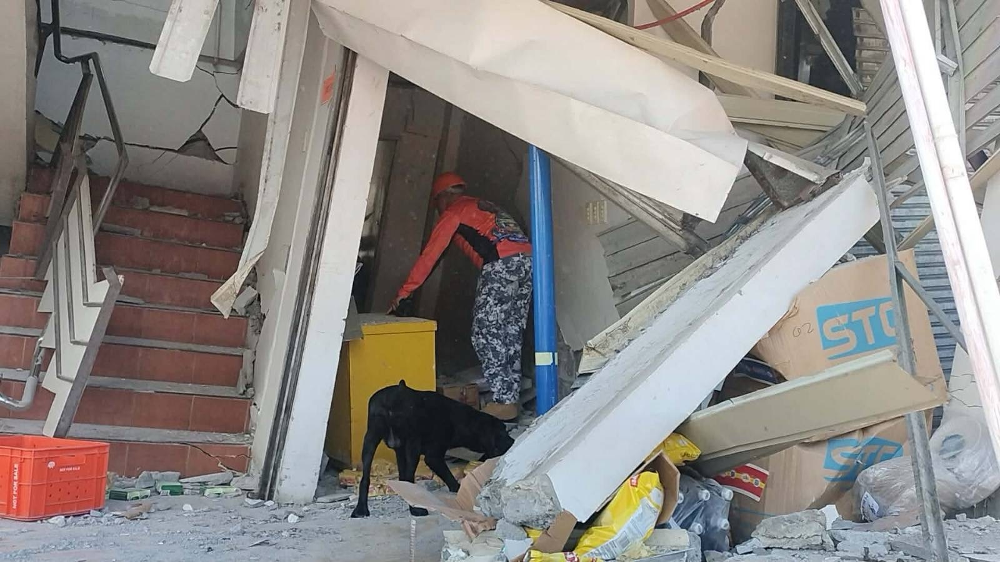
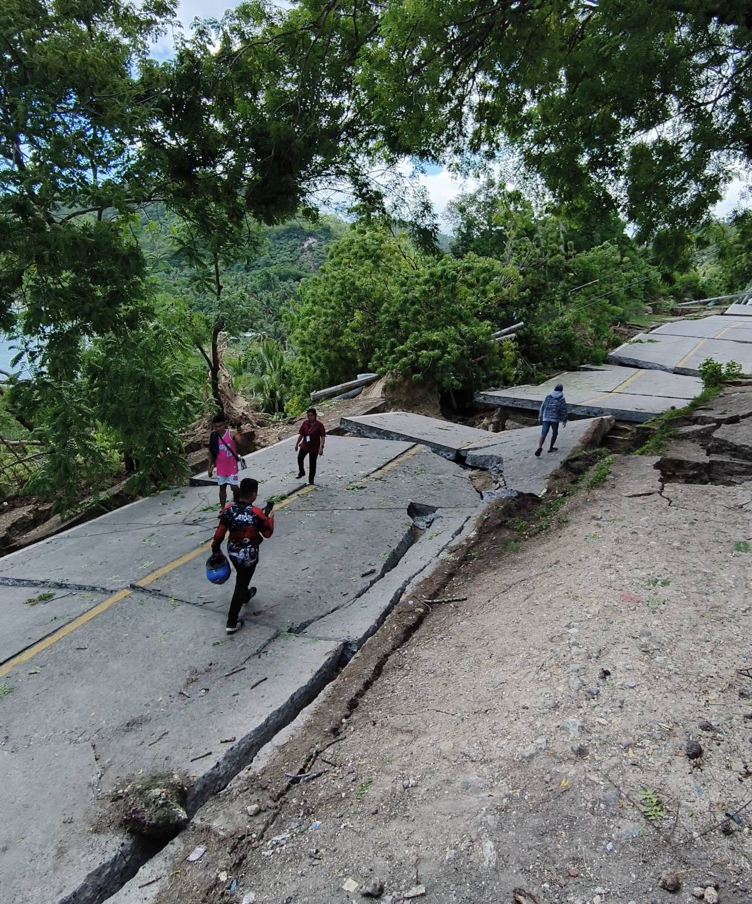
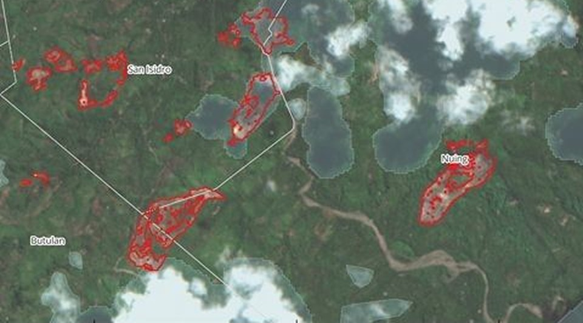
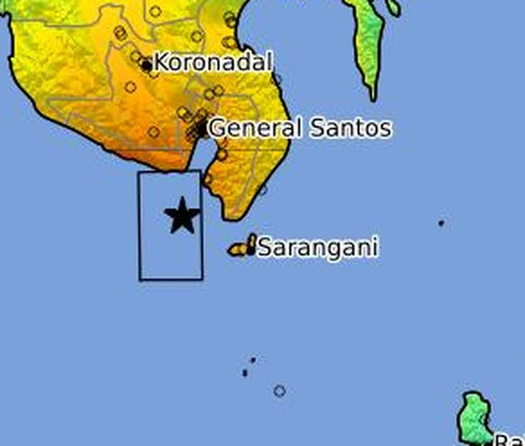

Essay 5 min read
Investment in General Santos & Sarangani, still worth it?
Everything for the Master,
TL;DR The June 2026 earthquake shut down General Santos City's largest private employers — SM, MGM, and KCC — and cut Glan off by road, erasing income for over a thousand workers and the vendors who depend on them. Roughly 22 people died. This is one resident's accounting of the economic aftermath, and an honest question: is business and capital still worth pouring into our region?
I'll tell you the situation first.
The June 2026 earthquake shook General Santos City and other parts of Sarangani Province, including Jose Abad Santos, though not part of Sarangani, in a most traumatic way.
Key establishments have ceased operations due to heavy structural damage: SM Mall, MGM Store, and our very own KCC. These retailers are the largest private employers in GenSan, collectively accounting for over 1,000 jobs. With staff currently instructed not to report for work due to safety risks, we are facing an immediate crisis.




Roads are the arteries of the economy. They connect producers to markets, workers to jobs, and communities to essential services.
This road from Brgy. Lago up to Brgy. Kapatan is closed. It didn't even reach Malapatan, let alone “Tour Town Glan”.
The only way you can get in and out of Glan is by air or water.
At least 78 lives were claimed across the region — roughly 13 here in General Santos and 18 in Sarangani — including 1 person who lives blocks away from our place, whom Boss Toyo visited.
Now look, I have a simple equation here. Please note that I am not an economist.
n × s = Total net loss (where n = avg daily net & s = days closed)
P460 × Days without work = 0 money.
0 money for the family = uncertainty.
Uncertain where to get money = utang and so on.
These families are now without a paycheck, with no clear indication of when they can return to work.
Fewer tricycles doing byahe to the city; no karenderya, street food, or vendors around these malls. That is 0 income for them as well.
W × d = Total Income Loss (where W = Daily Wage & d = days without work)
Avg daily net × No. days without selling = 0 money.
0 money for the family = uncertainty.
Uncertain where to get money = utang and so on.
These two equations are for the mentioned retailers. Now, imagine other businesses affected, individuals who are stuck in Glan, cannot go to the city for work. The cost of repair, the probations, food, water, electricity, and more. Imagine the cash flow, all cash flowing out,
The immediate loss of income for our men creates a ripple effect that weakens the entire local economy.
Okay so,
As someone raised in GenSan who frequents Sarangani, Glan, and Malapatan. I have been wondering if business and capital are still worth pouring into our region. The earthquake we experienced is not just a one-time, aftershocks are never-ending.
Business operations cannot resume; schools have gone back to online classes, and the trauma cannot be erased from the minds of our people. At even a minor shake, we will rush outside. You cannot prank or joke with us regarding an earthquake, our brains are wired to get out quickly.